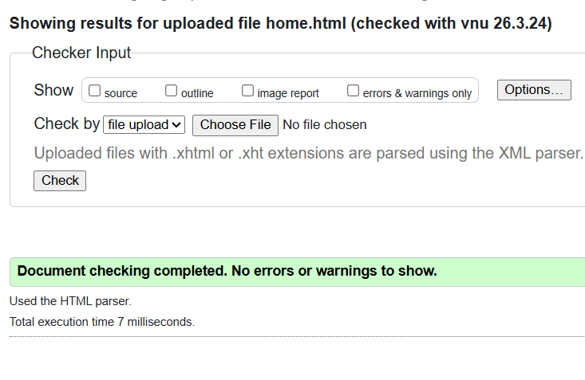
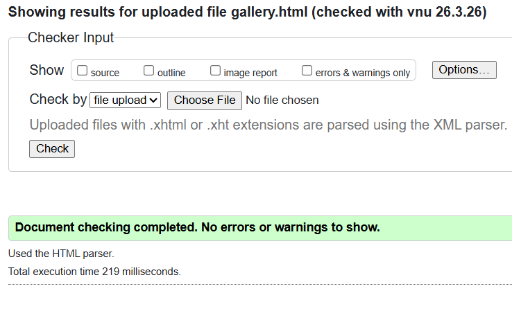
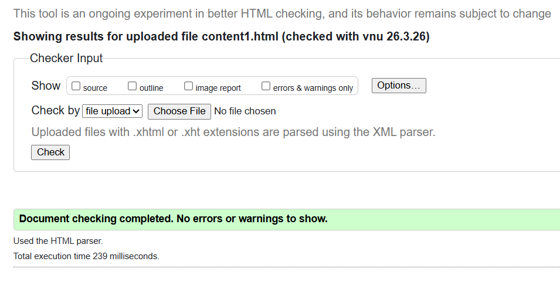

Home Page validation report
The validation report helped me identify several HTML and CSS issues in the pages I implemented. Some of the errors were caused by the h1,h2 elements cause i didn't folloow the order i just wrote like h1 the after h3 and so on.So I was able to correct these problems and make my code cleaner and more standards-compliant. This process helped me understand the importance of writing valid code, because it improves page structure, browser compatibility, accessibility, and overall quality of the website.

Back to Page Editor page
Gallery Page validation report
The validation report was useful because it helped me find mistakes in my Gallery page that I had not noticed before. Some of the issues were related to HTML structure and CSS syntax. After fixing them, the page became cleaner and more reliable. Overall, the validation process was helpful because it ensured that my page followed proper web standards and functioned more effectively.

Back to Page Editor page
Content Page validation report
The validation report for my Content page helped me identify small HTML and CSS errors that I had overlooked while coding. These included minor syntax and structural issues that could affect how the page is displayed and interpreted by the browser. After fixing them, my code became cleaner, more accurate, and more standards-compliant. This process taught me that validation is an important step in web development because it improves code quality, browser compatibility, and the overall reliability of the page.
